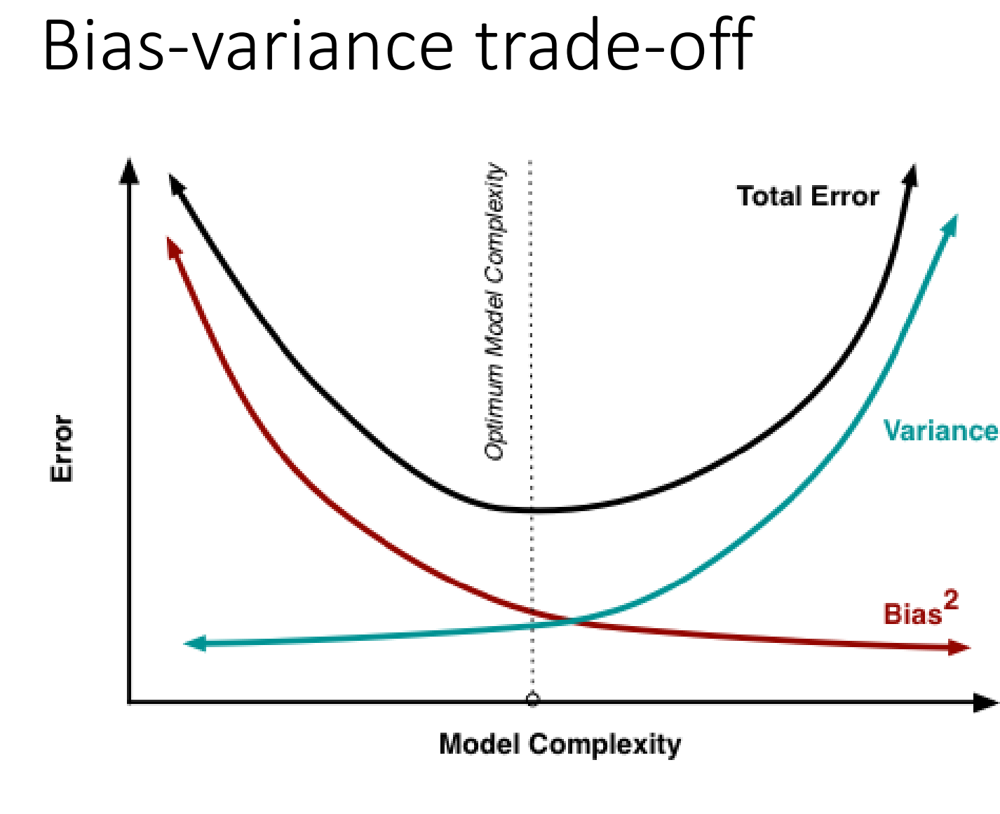

6 Wk6 Classification
6.1 Summary
| Information | Summary |
|---|---|
| Purpose of classification | To subset data into classes or values, such as landcover or estimating values like GCSE scores or pollution. |
| Different classification methods | Essentially slice the data in different ways. |
| Complexity of classification methods | They can often be made to appear more complicated than they are. |
| Controlling classifiers | Can be done using hyperparameters. |
| Desired outcome of classifiers | Can range from a single tree to a decision hyperplane boundary in multiple dimensions. |
6.1.1 ML methods in EO data classification
Table 1: Supervised Classification Methods
| Method | Description |
|---|---|
| Maximum Likelihood | A statistical method used to estimate the parameters of a probability distribution based on observed data. |
| Support Vector Machines (SVM) | A supervised learning algorithm that finds the best hyperplane to separate data into different classes. |
Table 2: Unsupervised Classification Methods
| Method | Description |
|---|---|
| Density Slicing | Divides the range of pixel values into equal intervals and assigns each interval a unique class value. |
| Parallelpiped | Uses a set of user-defined ranges for each band to define class boundaries in multi-dimensional space. |
| Minimum Distance to Mean | Assigns each pixel to the class with the closest mean value in multi-dimensional space. |
| Nearest Neighbor | Assigns each pixel to the class of its nearest neighbor in multi-dimensional space. |
Table 3: Other Machine Learning Methods
| Method | Description |
|---|---|
| Artificial Neural Networks (ANN) | A set of algorithms inspired by the structure and function of biological neural networks, used for pattern recognition and prediction tasks. |
6.1.2 Pros and cons - Supervised vs. Unsupervised
Table 1: Supervised vs. Unsupervised Classification
| Classification Type | Definition | Method |
|---|---|---|
| Supervised | Classifier learns patterns in the data and uses that to place labels onto new data. Pattern vector is used to classify the image. Usually, pixels are treated in isolation but as we have seen - contextual (neighboring pixels), objects (polygons), texture. | Pattern recognition or machine learning |
| Unsupervised | Identifies land cover classes that aren’t known a priori (before) and tells the computer to cluster based on info it has (e.g. bands) and label the clusters. | Density slicing, parallelpiped, minimum distance to mean, nearest neighbor, neural networks, machine learning / expert systems* |
6.1.3 Overfitting
- Bias refers to the difference between the predicted value and the true value. When a model has high bias, it is too simple and may underfit the data. On the other hand, when a model has low bias, it may overfit the data.
- Variance, on the other hand, refers to the variability of a model for a given point. When a model has high variance, it is too complex and may overfit the data. This means that it will perform well on the training data but poorly on new data.

In general, overfitting occurs when there is a trade-off between bias and variance. A model with high bias and low variance will underfit the data, while a model with low bias and high variance will overfit the data. The goal is to find a balance between bias and variance that results in good performance on both training and test data.

6.1.4 Outlook on the development of EO data Classification
Earth Observation (EO) data classification is continually evolving, with new technologies and techniques leading to several anticipated future developments:
- Multi-source data fusion:
- Integrating data from multiple sources like satellite imagery, LiDAR, and ground-based sensors will become more prevalent. This fusion enhances classification accuracy and offers comprehensive Earth’s surface information, improving decision-making and monitoring. For example, the European Union’s Copernicus Programme could use this in providing free data from various satellite missions and sensors for environmental monitoring, disaster management, and urban planning.
- Multi-temporal analysis:
- Sophisticated multi-temporal analysis techniques will be increasingly used to monitor changes in land cover, vegetation, and other features over time. This enables accurate and efficient change detection and monitoring of phenomena like urbanization, deforestation, and climate change. This aligns with the REDD+ initiative under the United Nations Framework Convention on Climate Change (UNFCCC), which uses multi-temporal analysis to monitor forest cover changes and evaluate policy effectiveness in reducing greenhouse gas emissions from deforestation and forest degradation.
- Cloud-based processing:
- The growth of cloud-based platforms, such as Google Earth Engine, allows for more efficient and scalable EO data processing workflows. This accessibility enables researchers and organizations to innovate in classification techniques and applications. The National Oceanic and Atmospheric Administration’s (NOAA) Big Data Project aims to make vast amounts of environmental data accessible and usable in the cloud, fostering innovation in developing new applications and services.
These advancements will provide comprehensive and timely information about Earth’s surface, informing policies and strategies in areas such as environmental management, disaster response, and urban planning.
6.2 Application - ****Support vector machines for classification in remote sensing****
Deep Learning methods can have universally good performance across Computer Vision tasks, e.g. Earth Observation data classification, not to mention techniques like transfer learning (pretrained model plus large data for a specific task) and meta learning (large universal pretrained model plus small amount of task-specific data) can further strengthen the accuracy.
However, in this week’s literature [https://www.notion.so/Wk6-Classification-98918c59eebc4b869f45ec22d1529657?pvs=4#b66310f96d47495f94efc9715bc4c9f2], SVM was demonstrated to generate better result with smaller data amount.
This vastly contributes to the particular task of remote sensing image classification. Also, we can derive insights of how elegant choice of model (SVM in this case) for downstream tasks can outperform blindly stacking (make ensemble of) popular neural networks.
6.2.1 Support Vector Machine
This model basically attempts at maximising margins of fitting lines that are trying to classify points. To do this, it finds an optimal hyperplane (”lines” extended in dimensionality). In the sense that it projects data into higher dimensions, it resembles kernel methods. Some even categorise SVM as one of kernel methods.
Oh, higher dimensions! Sounds computation-intense? But this is already an alleviation of computation compared to Neural Networks.
Besides, the amount of required data and scale of model weights are severely reduced, making it easier for both algorithm engineers to train and Remote Sensing experts to use.
6.2.2 Rationale Behind the Paper
The paper here deals with small amount of data, with ground truth selected using a random sampling procedure. To effectively use small data, it adopts SVM and achieved high classification accuracy with high dimensional data.
The author also delves into the detailed problems encountered using SVM. For classification task, two-class or multi-class problems are separately discussed. Usually, Earth Observation data falls within the multi-class one. The ‘one against one’ and the ‘one against the rest’ strategies for generating multi‐class SVMs are compared in this study. The “one-against-one” method proved to be better for multi-class.
Remote-sensing data often have different spectral, spatial and temporal resolutions, which pose challenges for traditional classification methods. SVM can overcome these challenges by mapping the data into a higher-dimensional feature space where a linear separator can be found. This way, It can
- help identify and map different land cover types and changes over time
- assist in monitoring and managing natural resources, such as forests, water, soil, etc.
- provide valuable information for disaster management, such as flood detection, fire risk assessment, landslide susceptibility, etc.
- support various applications in agriculture, urban planning, climate change studies, biodiversity conservation, etc.
- reduce the cost and time of field surveys and data collection
6.2.3 Future Advancement
- Combing ANN and SVM:
- A hybrid regression support vector machine-convolutional neural network (HRSVM-CNN) classifier can be used for object-based classification of high-resolution remote sensing images [Full article: Object based classification of high resolution remote sensing image using HRSVM-CNN classifier (tandfonline.com)]. In this approach, the image data is preprocessed and segmented, and then features are extracted using techniques such as local ternary patterns (LTrP), color histograms, gray-level co-occurrence matrices (GLCM), gray-level difference method (GLDM), edge features, and shape features. These extracted features are then classified using the HRSVM-CNN classifier.
- SVM can go further in its advantages:
- Transfer learning involves using a pre-trained model that has been trained on a large dataset to extract features from the data. These extracted features can then be used as input to an SVM classifier trained on a smaller dataset [TL-SVM: A transfer learning algorithm | Semantic Scholar]. This approach can take advantage of the ability of the pre-trained model to learn complex representations of the data and the ability of SVMs to find good decision boundaries even when the data is not linearly separable.
- Active learning, which involves iteratively selecting the most informative samples from a pool of unlabeled data and adding them to the training set. This can help to improve the performance of an SVM classifier even when the amount of labeled data is very limited.
6.3 Reflection
This week, I have been absent from the lecture and workshop, because I was at Data Dive CUSP London, which is quite an opportunity for meeting people in data science sector and honing skills of utilising data science skills to tell a story addressing real-world problems. My group explored “Does built-environment have an influence on Londoners’ mental health”, where we tried to utilise latest deep learning methods like attention mechanism and U-map for analysis and visualisation for a high ‘technical complexity’ mark.
I have been obsessed with Neural Networks during my undergraduate years: How can I distill this General Pretrained Model to be locally implementable to be my personal poem-composing assistant? How can I deploy this open-source Object Detection model on an ARM (Advanced RISC Machines) built in an IoT camera to detect high-street footfall? But the SVM (Support vector machines) introduced in this week’s literature really proves how simpler models (without neural classifiers @Benediktsson et al., Tso and Mather) can achieve performance no worse than the SOTA Deep Learning models in specific tasks like ****classification in remote sensing****.
This insights, elegant choice of model (SVM in this case) for downstream tasks can outperform blindly stacking (make ensemble of) popular neural networks, unveil new potentials for me when optimsing model performance, e.g., when doing transfer learning on a pretrained model on a classification task, I might consider experimenting with SVM in parallel with hyper-tuning Neural network, and seek possibilities of combining the two.
Despite the usefulness of this diversity of classification models, always
- Pay attention to their assumptions,
- Check carefully if our data and problem align with these assumptions.
- If not, process accordingly to satisfy them or switch methods.
Especially, when combining different Machine Learning methods, e.g. in module GISS(CASA0005), we used the result of KNN models to decide parameters (min_point and radius) for DBSCAN, always look into data to ensure the assumptions are met. The disparity in alignment with model assumptions can have impact on the whole data pipeline.